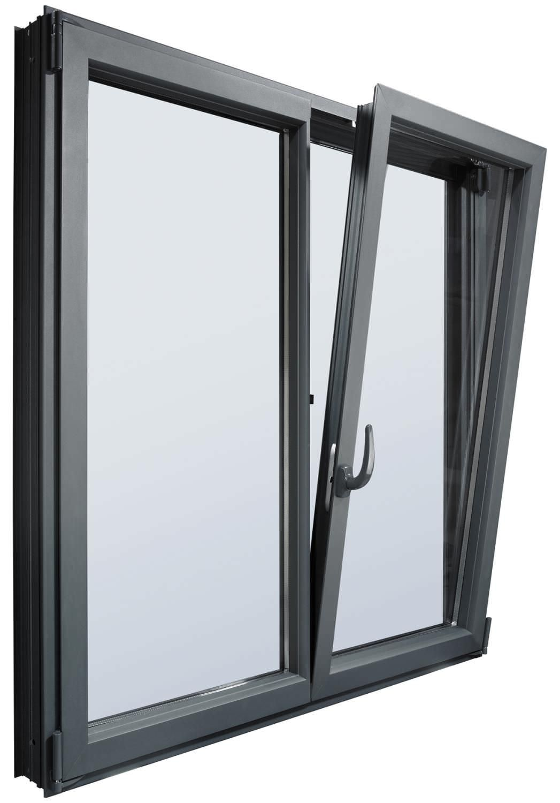
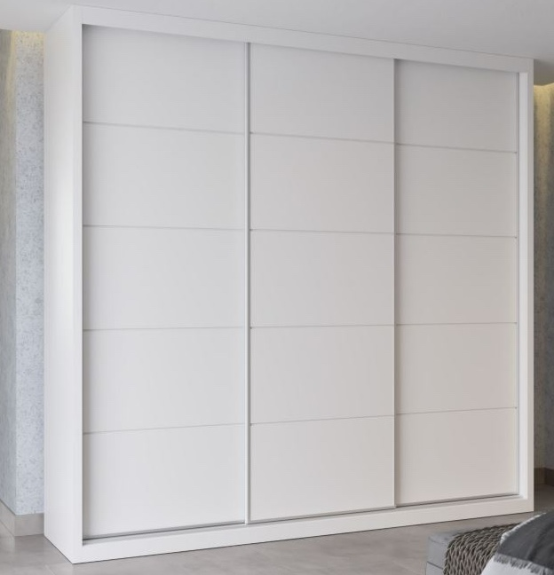
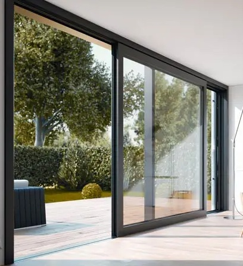

Introduce la clave de la promoción

Mejora integral de la envolvente térmica y confort acústico mediante el cambio de mecanismos abatibles por oscilobatientes en toda la vivienda.

Optimización del espacio interior de los dormitorios sustituyendo las hojas abatibles por un sistema de guiado oculto y puertas correderas de gran formato.

Cambio de puertas abatibles de los accesos de las viviendas al exterior por puerta correderas siempre que aplique.